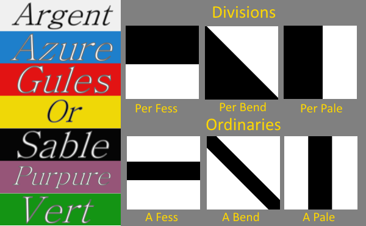

For the shield picture on the previous page you might have created the following blazon:
Per bend azure and or a chief sable and 3 choughs sable
Well done for recognising the birds as choughs! There is another lesson that we can learn here - heralds (who write blazons) don't like to waste words or repeat themselves, and we have two things on this shield that are the same colour. When they follow one another, as they do in the blazon above we can leave out the first one, to produce this:
Per bend azure and or a chief and 3 choughs sable

This gives us exactly the same result but is shorter. In complex shields you will often see colours and tinctures given in the form of the first, of the second or even of the field. In each case this "of the" actually means "the same as".
Where did that word tincture come from? Well, it is the blazonry term for "things used to colour objects", and it includes both the plain colours we have already met, and the furs that we will meet on the next page!
Finally, on the right is an illustration of the shield that you were asked to imagine. How did you do?
As a reward for your hard work, here is a crib sheet of some of the things you have learnt so far...
